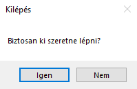
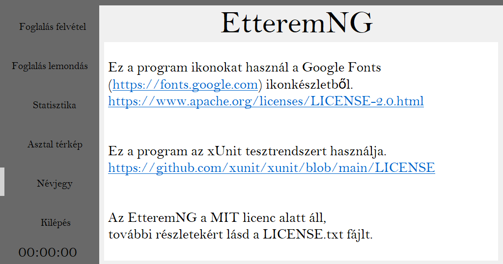
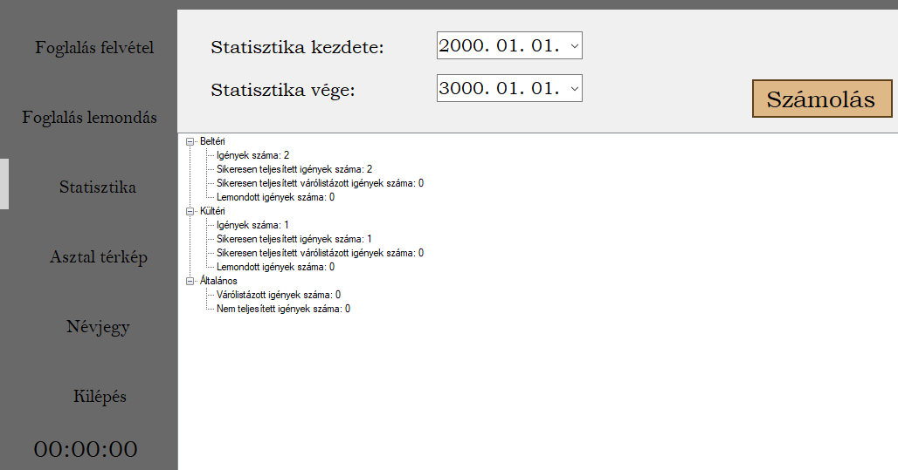

Általános kezelő felületi ismeretek
A program elsősorban egérrel történő vezérlésre lett tervezve, de billentyűzettel is vezérelhető, viszont elsősorban az egér használatát javasoljuk.
A vezérlő gombok képeket nem tartalmaznak, a nevük leírja, hogy milyen felületre visznek.
A főpanel gombjai a nem sötét szürke panelbe betöltik a megfelelő felületet. A fő panel része még egy óra, ami a pontos időt mutatja.
A kilépés gomb megnyomásakor van még lehetőség visszavonni a kilépési szándékot
Hardware igény
A program hardware igénye alacsony, bármely gépen tud futni a program, amely windows 7 vagy attól újabb rendszert futtat és rendelkezik legalább a .NET Framework 4.7.2-es verziójával.
A program felhasználási célja és területei
A program egy étterem asztalfoglalását lebonyolító rendszernek készült, amely képes kezelni új foglalásokat, illetve képes kezelni a már meglévőket. Képes a foglalások helyzetéről statisztikát kiállítani egy bizonyos időszakot figyelembe véve (minimum 1 teljes nap). A program képes még a jelenlegi asztal térképet is megjeleníteni. Az asztal térképről bővebben a 5-ös részben
Névjegy
A program névjegye tartalmazza a licencet, illetve a felhasznált technológiákat és ikonokat.
A foglalás felvétele
A foglalás felvétel során szükséges néhány adat a vendégtől, amelyeket egy dolgozó visz fel a gépbe, amit a program kezel innentől. A foglalás asztalok foglalására értendő, így ezen a felületen előre lehet lefoglalni asztalokat, ha azok még nem foglaltak.
A panel felépítése és használata
A panel egy világosabb témát követ, hogy láthatóan elkülönüljön a fő kezelő felülettől.
A panel 6 fő elemet tartamaz:
Lehetséges hiba üzenetek
A hiba üzenetek a foglalást felvivő személy számára fontos vissza jelzések, hogy valamit elgépelt vagy nem adott meg egyáltalán. A következők a lehetséges hiba üzentetek:
A hiba üzeneteket elmondják, hogy milyen hiba lépett fel. A hiba üzenet piros színben jelenik meg és a „Hiba történt” szöveg előzi meg.
Foglalás lemondás
A foglalás lemondásához szintén kell egy két adat a vendégtől, amivel megbizonyosodhatunk, hogy tényleg ő-e az, aki leadta a foglalást. Ha lemondanak egy foglalást akkor azt nem lehet már visszavonni csak újra lefoglalni az asztalokat amikor már lehet máshova lesz csak hely.
A panel felépítése és használata
A panel itt is egy világosabb külsőt használ, mint a fő panel viszont kevesebb mezővel.
A panel 3 fő elemet tartalmaz:
Statisztika
A statisztika egy étterem életében fontos, hisz ezáltal lehet megtudni, hogy mikor mennyi foglalás volt, mennyit tudtak teljesíteni, mikor kéne több szék mikor elég kevesebb. A statisztika egy dolgozót annyira nem hozhat lázba viszont egy felsőbb beosztású embert annál inkább.
A panel felépítése
A panel egyszerű felépítésű és letisztult, semmi fölösleges dolgot nem tartalmaz.
A „Statisztika kezdete” és „Statisztika vége” mellett lévő mezőkbe kell beírni, hogy melyik kettő dátum közötti statisztikát szeretnénk látni, viszont fontos, hogy a vége dátum vagy ungyanakkor vagy később legyen mint a kezdeti dátum.
A „Számolás” gomb megnyomására kiszámítja a statisztikát és az alatta lévő fehér mezőbe kiírja őket.
Statisztika értelmezése
A statisztika számolt része 3 nagyobb részre van osztva és ezen a 3 három részen belül vannak az oda tartozó statisztikai elemek kiírva. A három fő rész a következő:
Az elnevezések magukért beszélnek.
Felhasználási formák
A statisztika felhasználási formái sok félék lehetnek. A legvalószínűbb az, hogy üzlet tulajdonosa szeretné látni, hogy mikor, hogy megy az üzlete, melyik hónapok gyengébben vagy épp erősebbek, mikor kellhet extra személyzet mikor nem. A statisztikából kiderülhet, hogy érdemes-e egyáltalán kinti asztalokat tartani vagy azokat senki nem szereti, ez főleg az őszi és tavaszi időszakra értendő, hisz télen senki nem szeret kint ülni. Egy statisztika meg tudja mutatni azt is, hogy mennyi foglalást nem tudtak teljesíteni, ami egy jel lehet arra, hogy több helyet kéne valahogy biztosítani a vendégek számára.
Asztal térkép
Az asztal térkép funkció a személyzet számára egy hasznos információ arról, hogy jelenleg melyik asztal foglalt.
A panel felépítése és értelmezése
A felépítése nem tartalmaz semmilyen gombot se beviteli mezőt, az egész felület csak információt közöl, hisz az adott időpontot mutatja.
A panel két részre van osztva, a „Benti” és a „Kinti” részekre amikor elkülönítik a két hely asztalait. Az „Azonosító” oszlopba az asztalok azonosítói kerülnek növekvő sorrendbe. Az „Állapot” részben lehet olvasni, hogy épp szabad vagy foglalt-e az asztal. Az „Összetolva” oszlop írja, hogy az adott asztal össze van-e tolva másikkal, ha nincs akkor a „Nem” szöveg jelenik meg, ha igen akkor meg az asztalok azonosítója, amikkel össze van tolva.
Felhasználási formák
A dolgozókat segíti, hogy mennyire van telt ház éppen, mennyire kell kapkodni vagy épp biztosra menni, hisz a kapkodás során sok minden félre mehet. A vezetőség láthatja azt is, hogy adott órában hol vannak szívesebben az emberek.